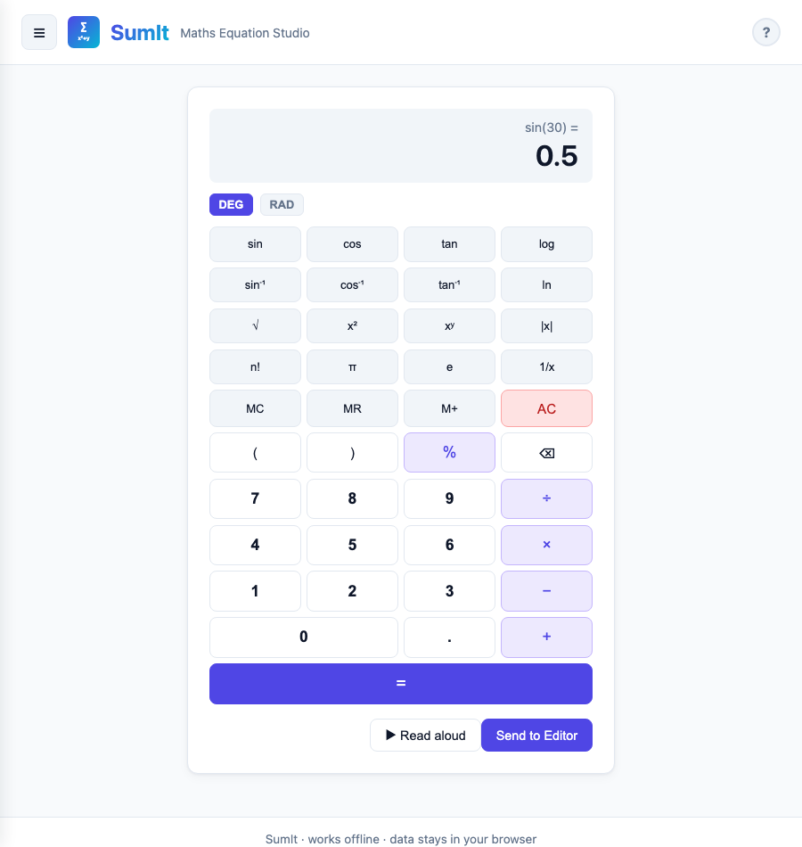

SumIt Help Guide
Learn how to use every mode, tool and accessibility feature in SumIt.
Overview
SumIt is a browser-based maths, physics and chemistry equation studio. It works fully offline as a Progressive Web App — every library and AI model is bundled locally, all data stays in your browser.
- Editor — type or paste LaTeX with autocomplete, formula library, and multi-line support
- Dictate — speak equations using your microphone
- Draw — handwrite equations and recognise them with the bundled AI model
- Scientific — full scientific calculator with memory and DEG/RAD modes
- Graphing — plot up to 6 functions simultaneously (Cartesian, polar, parametric)
- Chemistry — render reactions and chemistry-specific formulas via mhchem
- History — review, reload, and export saved equations
Navigation & Settings
The ☰ button at the top-left opens a slide-out menu listing every mode. The current mode is highlighted; click any item to switch. Use ↑ / ↓ to move between items with the keyboard, Esc to close.

The hamburger menu with Settings pinned at the bottom.
Settings
Open Settings from the bottom of the menu. All preferences are stored in your browser and persist across sessions.

Settings panel — scroll within for all options.
| Setting | What it does |
|---|---|
| Level | Filters formulas in the library and autocomplete. Three groupings: By age — ≤ 16, 16 – 18, University (cumulative — picking a level shows everything up to it) UK exam syllabus — GCSE Maths/Physics/Chemistry, A-Level Maths/Further Maths/Physics/Chemistry International Baccalaureate — IB Mathematics/Physics/Chemistry Syllabus options show only the formulas relevant to that exam board's content. |
| Theme | Match system, plus 5 light themes (Light, Paper, Sepia, Solarized Light, Sky) and 5 dark themes (Dark, Solarized Dark, Dracula, Nord, Midnight). |
| Default angle mode | Calculator opens in DEG or RAD on next page load; live changes also retoggle the open calculator. |
| Confirm before overwriting | If on, "Send to Editor" prompts before replacing existing content; if off, replaces silently. |
| Live preview on Draw | Default state of the live-recognition toggle on the Draw tab. |
| Voice | Picks which system voice Read-aloud uses. Click 🔊 Test voice to preview. |
| Read-aloud rate | Slider from 0.7× to 1.3× — applies to every Read-aloud button across the app. |
Editor
Autocomplete
As you type a word (≥ 2 letters) the autocomplete dropdown shows matching Greek letters, operators, and formula triggers. Examples:
- Type
alpha→ suggests\alpha(α) - Type
sqrt→ suggests\sqrt{} - Type
qform→ suggests the quadratic formula - Type
schrod(with Physics on) → suggests Schrödinger equations
Use ↑ / ↓ to navigate, Enter or Tab to accept, Esc to dismiss. Frequently-used suggestions float to the top of the list automatically.

Each suggestion is rendered typographically so you see what you'll get.
Buttons
| Button | Action |
|---|---|
| ▶ Read aloud | Speaks the equation in plain English (handles \ce{} chemistry and align environments) |
| ⊞ Multi-line | Wraps the equation in an align environment — use ↵ New line or Shift+Enter to add aligned rows |
| ⚛ Physics | Toggles the physics symbol palette and adds physics formulas to the library/autocomplete |
| 📚 Formulas | Opens the searchable formula library (300+ formulas, scoped by Physics toggle) |
| Copy ▾ | Opens a menu with: Copy LaTeX (raw source), Copy MathML (XML), Copy for Word (wrapped <math> document — paste into Word for a live equation) |
| Export PNG | Downloads the equation as a PNG image |
| Save | Adds the current equation to History |
| Clear | Clears the editor |
The editor uses a rich maths field — you can type LaTeX directly or use the on-screen keyboard. The field itself shows the equation typeset live as you edit. Below, a single output card has tabs for the other useful representations: LaTeX, MathML, Spoken. Click any tab to switch view; the content updates live as you type.

Editor with toolbar and tabbed output card.
Formula Library
The library bundles 300+ named formulas across maths, physics, chemistry, engineering, and physical constants. Click 📚 Formulas in the relevant tab to open it.
- Editor (Physics off) — algebra, trig, calculus, linear algebra, geometry, statistics, discrete maths, engineering, constants
- Editor (Physics on) — adds mechanics, electromagnetism, thermodynamics, quantum, relativity, optics & waves
- Chemistry tab — chemistry reactions and formulas only
The visible set is also filtered by the Level setting: ≤ 16, 16 – 18, University, or All. Picking a level shows everything up to and including it.
Use the search box to filter by name, id, or keyword. Click any card to insert the formula at the cursor; close with Esc or the ✕ button. The same trigger ids power the autocomplete dropdown.

Formula library — categorised sidebar, searchable, click-to-insert.
Speak
Click Start listening and speak your equation naturally. Examples:
- "x squared plus two x equals zero"
- "square root of nine over three"
- "the integral of x squared"
The recognised text is converted to LaTeX automatically. Click Send to Editor to transfer it. Requires a browser with Web Speech API support (Chrome or Edge recommended).
Draw
Handwrite an equation on the canvas, then click Recognise. A bundled neural network (~117 MB) is loaded into memory the first time you click Recognise — subsequent recognitions are immediate. Nothing is sent to any server. If the model fails to load, recognition silently falls back to the bundled template-matcher.

Draw tab with Live preview and the Train picker expanded.
Controls
| Control | Action |
|---|---|
| Stroke slider | Adjusts pen thickness |
| Colour picker | Changes ink colour |
| Live preview | Runs the fast template-matcher after every stroke and shows the rolling result. Tick to enable; default state set in Settings. |
| Undo | Removes the last stroke |
| Clear | Clears the canvas |
| Recognise | Loads the AI model on first use, then runs recognition. Long equations show a "may be cut off" warning if the decoder reaches its limit |
| Save PNG | Downloads the canvas as an image |
| Send to Editor | Transfers recognised LaTeX to the Editor (confirms before overwriting existing work) |
Live preview & correction
With Live preview on, recognition runs after each stroke. Each detected symbol appears with a faint dashed box on the canvas — click any box to pick a different interpretation from the alternates. Picking an alternate also teaches the matcher: that drawing is silently saved as a template tagged with your chosen symbol, so future similar shapes prefer it.
To keep things stable as you write, when you start a new mark clearly to the right of everything before it, the prior strokes are committed and stop being re-evaluated — only the latest active group is recognised on each stroke.
Recognition result
The result card (visible in the Draw screenshot above) shows the rendered equation as the primary content. Use Send to Editor or Clear & retry, or click ▼ Show LaTeX to reveal the raw source. When more than one interpretation is available, Alternatives chips appear below — click any to swap the result.
Train your handwriting
Open the Train your handwriting panel to teach the template-matcher new symbols.
- Draw a single symbol on the canvas above.
- Click what you wrote. The picker shows Best guesses from the matcher plus a categorised grid of common symbols (Numbers, Operators, Brackets, Letters, Capitals, Greek, Maths symbols).
- The drawing is saved as a user template; the canvas clears so you can train the next symbol.
Power users can still type LaTeX directly via the Advanced — type LaTeX directly details. Saved templates appear in Your saved templates; right-click (or long-press on touch) any tile to delete it. Remove my templates wipes them all.
Scientific Calculator
A full scientific calculator powered by math.js. Switch between degree and radian modes using the DEG / RAD toggle.

Scientific calculator with standard 4-column layout.
Functions
- Trigonometry:
sin,cos,tanand their inverses (correct in both DEG and RAD) - Logarithms:
log(base 10),ln(natural) - Powers:
x²,xʸ,1/x - Other:
√,|x|,n!,π,e - Memory: MC clear, MR recall, M+ add to memory (true accumulator)
- Smart wrapping: typing
-4then√gives√(-4);cos(30)thensingivessin(cos(30))
Keyboard shortcuts
While the Scientific tab is active, you can type numbers and operators directly. Enter evaluates, Backspace deletes, Esc clears.
Use Send to Editor to transfer the result to the equation editor.
Graphing Calculator
Plot up to 6 functions simultaneously. Each function is colour-coded. Three modes:

Graphing calculator in Cartesian mode.
- Cartesian —
sin(x),x^2 - 3,sqrt(x) - Polar —
2 + 2*sin(theta)orcos(3*theta)(boththetaand\thetawork) - Parametric —
cos(t) ; sin(t)(separate x and y with;;tranges over the visible x-domain)
Switching modes preserves your edited functions; defaults are only seeded when you haven't customised anything.
Controls
- Edit any expression field — the graph updates as you type
- Adjust the x range inputs to change the horizontal domain (input or change events)
- Click + Add function to plot an additional curve (max 6)
- Click ✕ beside a function to remove it
- 🔊 Audio trace sonifies the function — click again to stop
- ▶ Read aloud describes the plotted functions
- Send to Editor transfers the focused function to the equation editor (confirms before overwriting existing work)
Chemistry
The Chemistry tab renders chemical formulas and reactions using the mhchem KaTeX extension. The input box accepts two flavours:

Chemistry tab with a rendered reaction.
- Reactions — bare mhchem syntax, e.g.
H2SO4 + 2NaOH -> Na2SO4 + 2H2O(auto-wrapped in\ce{...}) - Pure LaTeX — formulas like
\text{pH} = -\log_{10}[H^+]render as-is (no wrapping)
mhchem syntax
| You type | Meaning |
|---|---|
| H2O | Subscript numbers (H₂O) |
| Ca^2+ | Charge superscript (Ca²⁺) |
| ^{14}C | Isotope mass number (¹⁴C) |
| -> | Reaction arrow (→) |
| <=> | Equilibrium arrow (⇌) |
| v / ^ | Precipitate ↓ / gas ↑ |
Click 📚 Formulas to browse 20+ chemistry formulas, or use the chip bar for arrows, states, and special symbols.
History
Every equation you save in the Editor or Chemistry tab appears here (capped at 500 entries; older saves are auto-trimmed if storage runs short). Click Load to restore an equation to the Editor (confirms before overwriting). Click Export all (JSON) to download your full history. Stored in your browser's localStorage — never transmitted.
Accessibility
SumIt is built for keyboard, screen-reader, and reduced-motion users. Every command is reachable without a mouse.
Keyboard navigation
- Tab / Shift+Tab moves between controls
- Enter or Space activates buttons; Esc closes any modal, drawer, or dropdown
- ↑ / ↓ / ← / → / Home / End move between adjacent tabs and menu items
- Modals trap focus inside while open and restore focus to the trigger when closed
- A Skip to main content link appears as the first focus stop on every page
Global shortcuts
| Shortcut | Action |
|---|---|
| ? | Open this help in a new tab (only when not typing) |
| Cmd / Ctrl + K | Toggle the menu drawer |
| Cmd / Ctrl + S | Save the current equation (Editor only) |
Screen-reader support
- Toast messages and the Recognition card are live regions — screen readers announce updates automatically
- The math-field is labelled and exposed as a textbox; equation MathML is shipped to assistive tech via the math-field's accessible name
- Page title updates as you switch modes ("Editor — SumIt", "Graphing — SumIt", …)
Visual accommodations
- Reduced motion — when your OS has "reduce motion" enabled, all transitions and the drawer slide are disabled
- Themes — every bundled theme passes WCAG AA contrast for text and muted text against its surfaces
- Touch targets — all controls hit a minimum 44 × 44 px on touch devices
- Focus rings — every interactive element shows a visible focus indicator when reached by keyboard (suppressed for mouse users via
:focus-visible)
Credits & Licences
SumIt is built on open-source libraries, all with licences compatible with commercial use. Full attributions and licence text live in LICENSES.md.